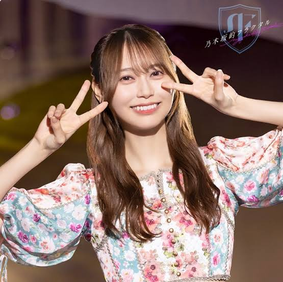
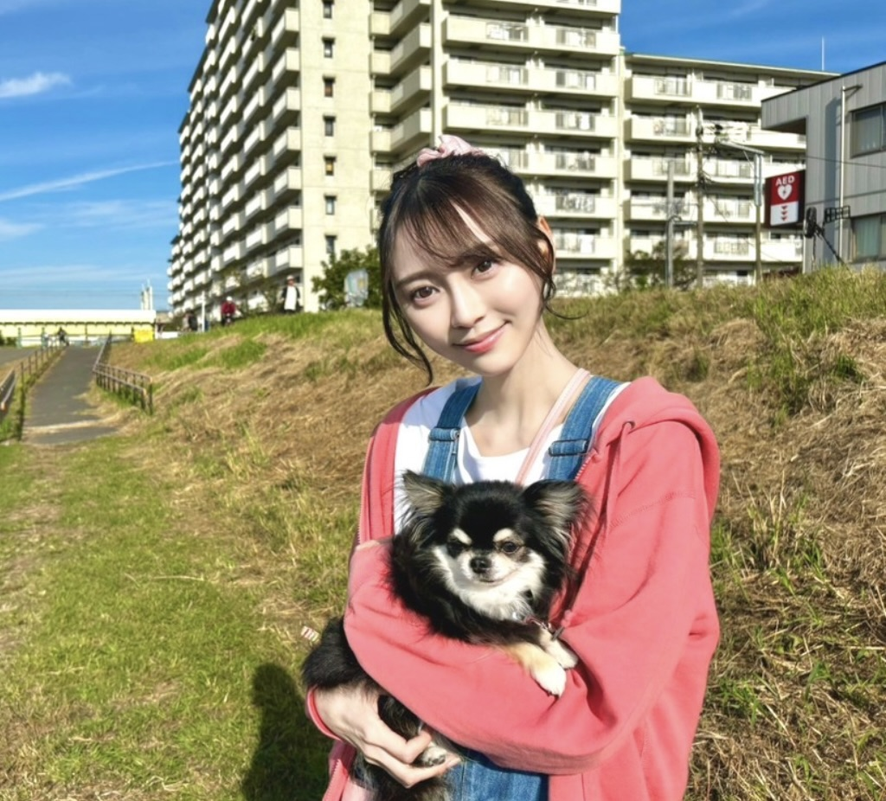
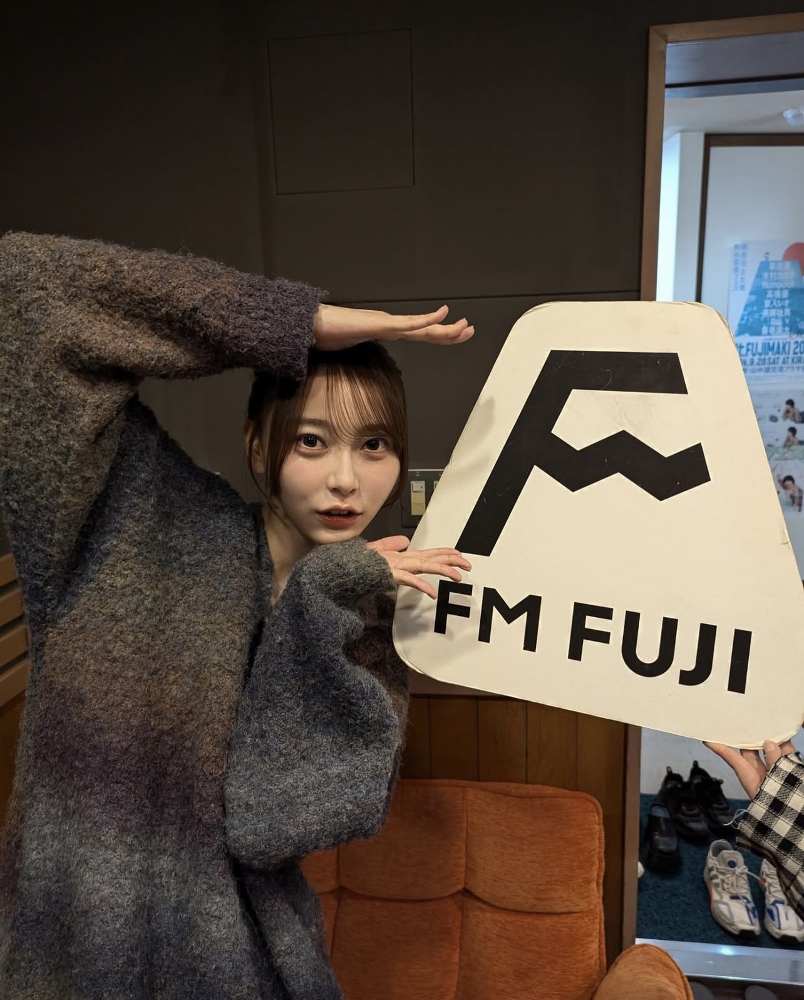
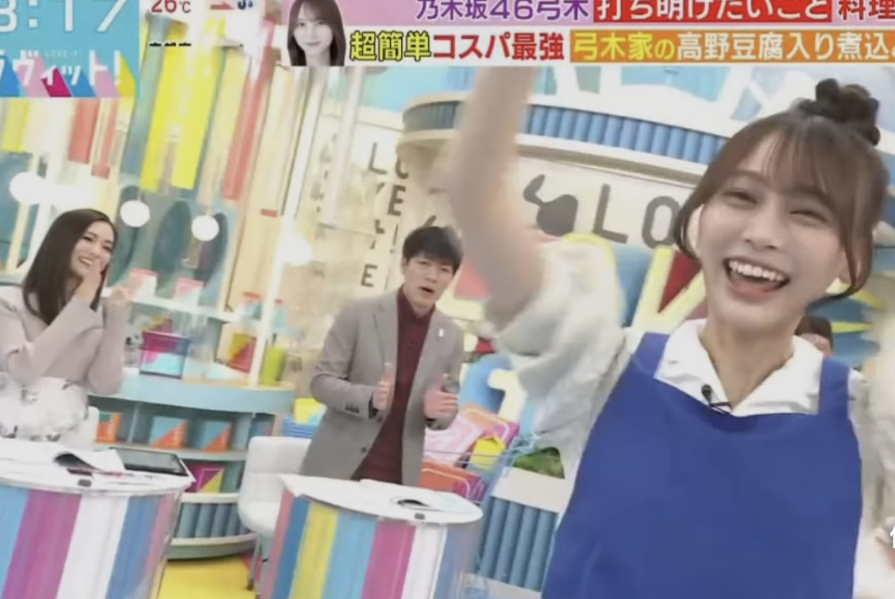
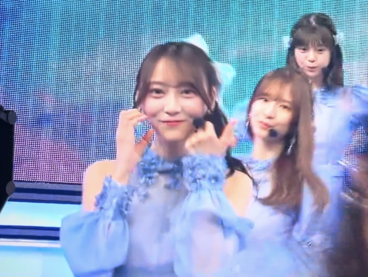
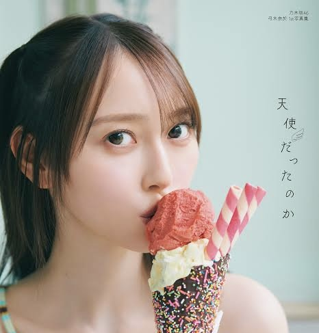
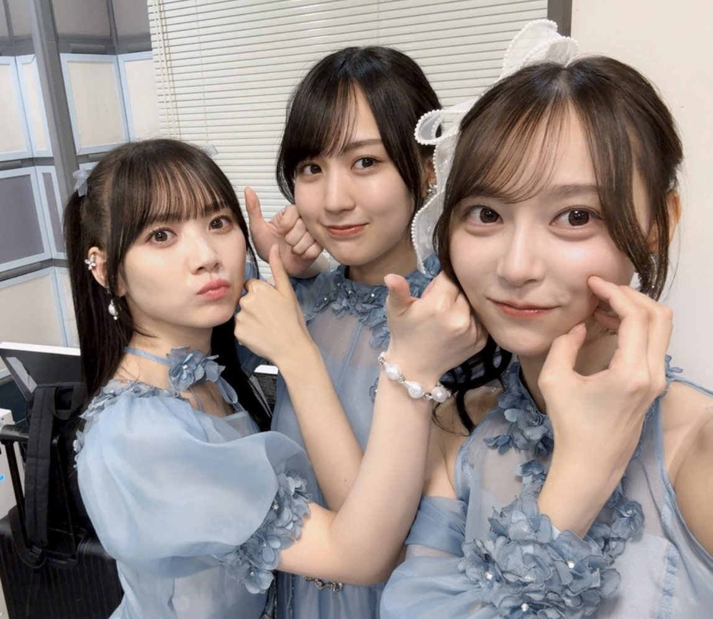

プロフィール
- 名前
- 弓木 奈於（ゆみき なお）
- 生年月日
- 1999年2月3日
- 出身地
- 京都府
- 所属
- 乃木坂46（4期生）
- ニックネーム
- ゆみっきー・なおちゃん・弓木ちゃん
- 血液型
- A型
- 星座
- みずがめ座
- 身長
- 165cm
- サイリウムカラー
- 赤 × 黄緑
- 趣味
- シルバミアファミリー、ドラマ鑑賞、料理、お笑い etc...
- 特技
- 水泳、バスケ、英語の発音
- 家族構成
- 7人兄弟の次女（弟は俳優・弓木大和）
- 本人公式SNS
活動年表


| 年代 | 出来事・活動 |
|---|---|
| 2013年6月 | 芸名「弓木 菜生」で劇団ハーベスト入団 |
| 2017年7月 | ミスiD2018 セミファイナリストに選出 |
| 2018年8月 | 劇団ハーベスト卒団／坂道合同オーディション合格 |
| 2019年9月 | 坂道研修生として活動開始 |
| 2020年2月 | 乃木坂46への配属が発表 |
| 2020年10月 | 『沈黙の金曜日』アシスタント就任 |
| 2022年7月 | 30th「好きというのはロックだぜ!」で初選抜 |
| 2023年4月 | 「水曜日のハウマッチ」ナレーター就任 |
| 2023年10月 | 「ラヴィット！」金曜シーズンレギュラー出演 |
| 2024年4月 | 35th「チャンスは平等」で初の福神入り |
| 2024年6月 | 公式Instagram開設@nao_yumiki_official |
| 2024年7月 | 写真集「天使だったのか」発売／オリコン書籍部門1位 |
| 2024年7月 | 「首ンセス」結成（五百城・奥田・川﨑・筒井と共にリーダー就任） |
| 2024年9月 | 京都市 若者移住促進プロジェクトCMに出演 |
| 2025年1月 | ドラマ「未恋」で初主演 |
| 2025年6月 | 39th「Same Numbers」に選抜入り（10作連続） |
出演番組


- 乃木坂工事中：グループの冠番組で天然トークが炸裂
- 沈黙の金曜日：「アルコ&ピース」の酒井と共にMC、鋭いツッコミも話題
- ラヴィット！：TBS朝の人気バラエティ。明るさが光る
- 東京パソコンクラブ：意外なITスキルを発揮
- 未恋（ドラマ）：繊細な表情と自然な演技で話題に
代表的な楽曲

参加楽曲数：40曲以上（表題・アンダー・ユニット曲含む）
表題曲からアンダー曲、ユニット曲まで幅広く参加。
特設ページでは
歌詞・フォーメーション・パフォーマンスへの深掘りを紹介!
写真集『天使だったのか』

発売日：2024年7月23日（撮影：三瓶康友）
撮影地はタイのプーケットで、彼女の魅力や新たな一面を詰め込んだ一冊となっている
弓木家と愛犬うーくん
弓木家は7人兄弟！ラジオやバラエティーで度々話題になる大家族
愛犬の雲海(うんかい)くんは人見知りでビックリ屋さんですが、活発です🐶両極端の性格としてファンにも知れ渡っている
メンバーとの関係図

乃木坂のメンバーでは同期の田村真佑と賀喜遥香と特に仲がよく、プライベートな関係性などが話題に
特設ページでは
メンバーやあらゆる芸能人との関係性を紹介！